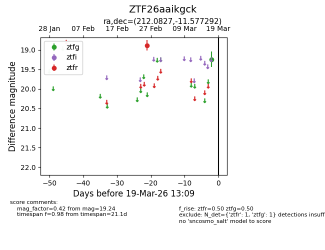
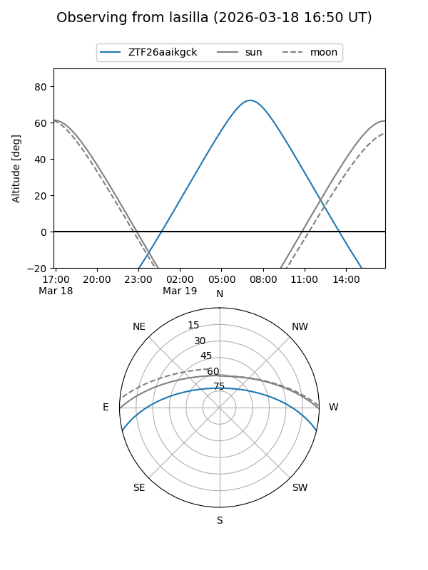
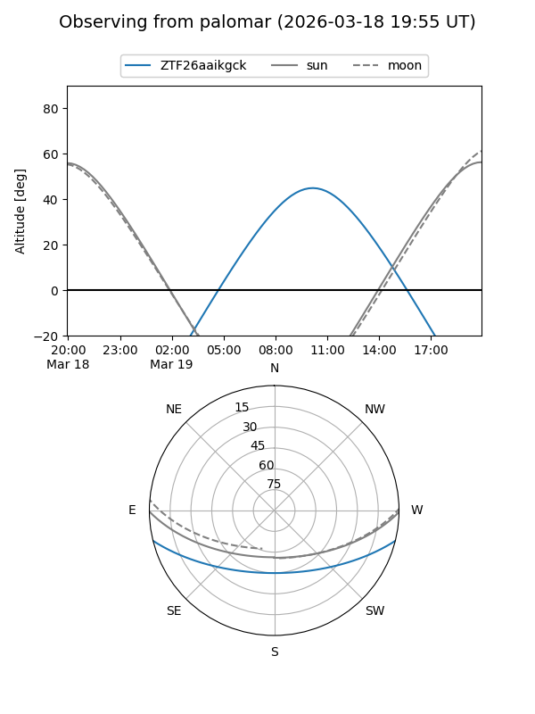

ZTF26aaikgck
Target ZTF26aaikgck at 2026-03-19 13:11
Aliases and brokers:
FINK: link
Lasair: link
ALeRCE: link
alt names
ZTF26aaikgck (ztf,fink_ztf)
Coordinates:
equatorial (ra, dec) = 212.0827,-11.57729
equatorial (HMS+DMS) = 14:08:19.85,-11:34:38.25
galactic (l, b) = (331.1774,+47.03383)
Flags:
Photometry:
last ztfg=19.24, ztfr=18.89
1 ztfg, 1 ztfr detections
Lightcurve

Visibility


Additional plots